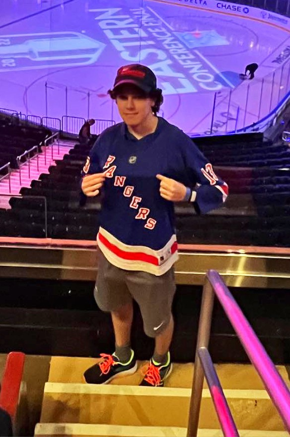
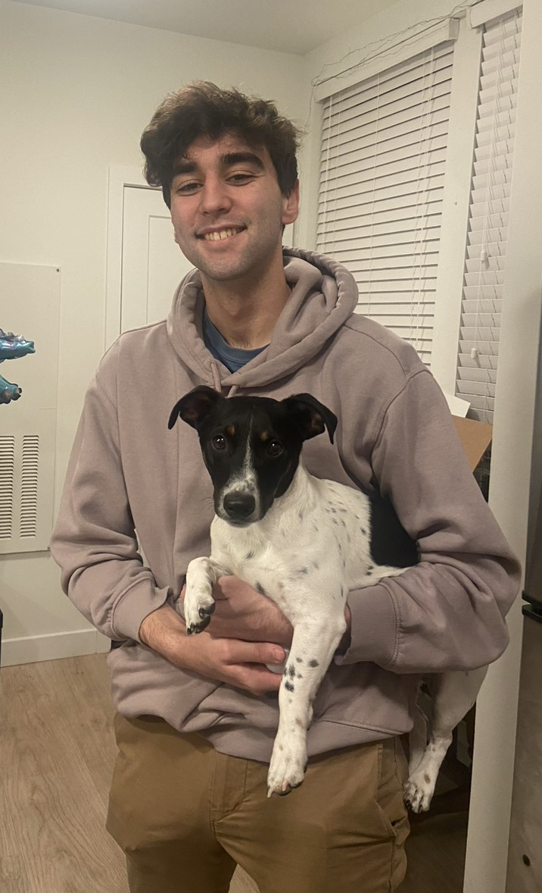
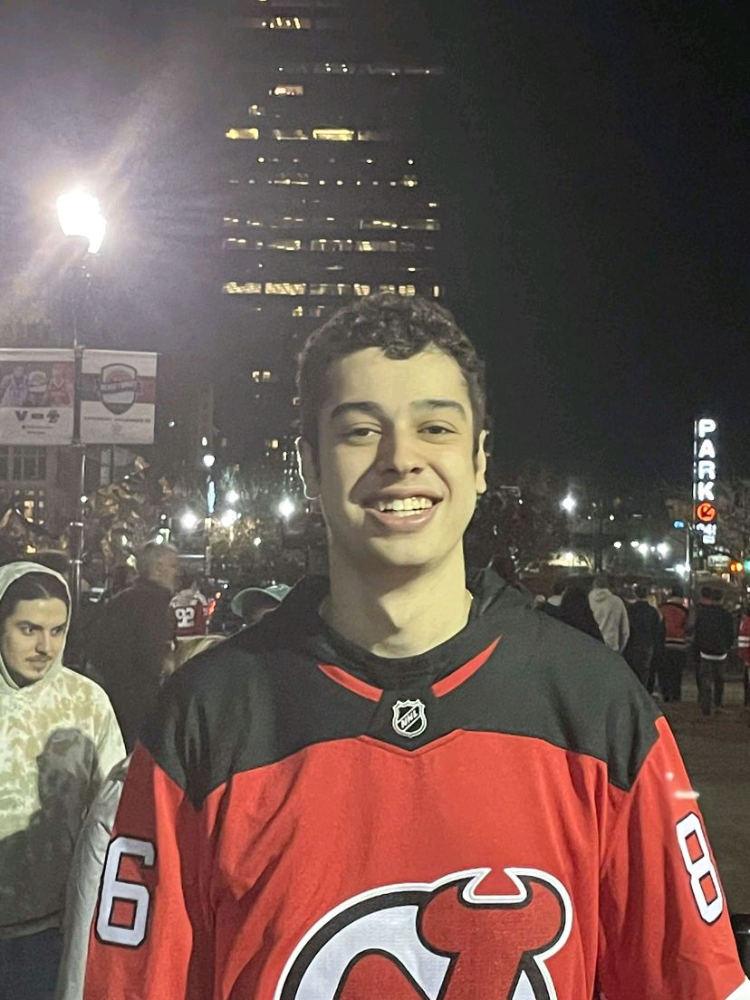
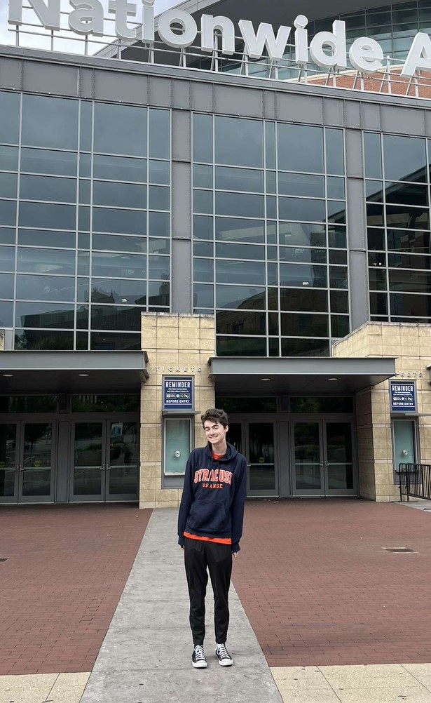

About Us
The Hockey Analytics Club is a student-run organization that meets weekly during the academic year to discuss trends and events in the world of hockey. The Club conducts analytical research and has worked with the Syracuse University Women’s Ice Hockey team, the AHL’s Syracuse Crunch, the NHL’s Los Angeles Kings and SU’s Tennity Adult League. Through these connections, club members have secured hockey statistician internships.
During the 2022-23 year, the club continued its research project titled “NHL Roster Salary Composition’s Effect on Team Success.” Club members also staged various activities such as a mock trade deadline, club fantasy hockey league, in-season predictions discussions, draft and free agency prediction activities and an analytics-based scavenger hunt. Outside of club meetings, members frequently got together to play floor hockey at the multipurpose court at SU’s Barnes Center. In addition, the club annually hosts guest speakers, the most notable being NHL agent Allan Walsh. The club uses analytics in its research, discussions, and projects and features students from numerous majors on campus.
The club uses analytics in research and discussions, but don’t worry if you don’t have an analytical background. The club is open to all SU students and recognizes that students from all academic backgrounds can positively contribute to its growth. Join us to gain analytical research skills, learn from industry leaders, and talk hockey with fellow fanatics.
Club Leadership
President: David Gold

Hometown: Port Washington, NY
Major: Sport Analytics
Favorite Team: New York Rangers
Email: dbgold@syr.edu
Vice President: Ian MacMiller

Hometown: Los Angeles, CA
Major: Sport Analytics
Favorite Team: Los Angeles Kings
Email: ijmacmil@syr.edu
Director of Research: Rob White

Hometown: Essek Falls, NJ
Major: Sport Analytics
Favorite Team: New Jersey Devils
Email: rwhite@syr.edu
Director of Operations: Ryan Severe

Hometown: Lake Forest, CA
Major: Sport Analytics & Psychology
Favorite Team: Washington Capitals
Email: rssevere@syr.edu
Director of Media: Quinn Robnett

Hometown: Livingston, MT
Major: Sport Analytics
Favorite Team: Colorado Avalanche
Email: qprobnet@syr.edu